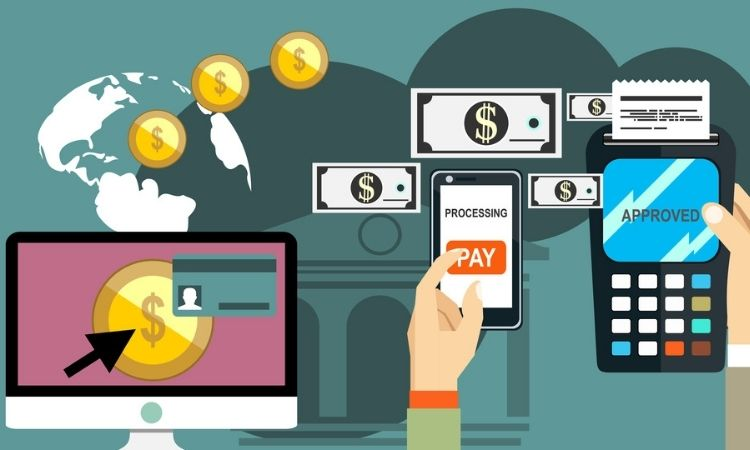

Formas de pago digitales: la revolución en las transacciones
Las formas de pago digitales han transformado profundamente la manera en que realizamos compras y transferencias, facilitando transacciones más rápidas, seguras y convenientes.
¿Qué opciones existen?
Entre las principales alternativas encontramos:
- Tarjetas de crédito y débito virtuales: reemplazan las tarjetas físicas para pagos en línea.
- Billeteras digitales: apps como PayPal, Apple Pay o Google Pay que almacenan métodos de pago.
- Criptomonedas: activos digitales que permiten pagos sin intermediarios bancarios.
- Transferencias instantáneas: sistemas como PIX en Brasil o Bizum en España.
Ventajas clave
- Comodidad: pagos en cualquier momento y lugar desde dispositivos móviles.
- Seguridad: tecnologías como tokenización y autenticación multifactor protegen las transacciones.
- Inclusión financiera: acceso a servicios bancarios para personas no bancarizadas.
Desafíos
A pesar del crecimiento, hay retos por superar:
- Fraudes y ciberseguridad: mantener la confianza frente a ataques y estafas.
- Regulación: normas claras que protejan consumidores y comerciantes.
- Acceso tecnológico: cerrar la brecha digital para que todos puedan usar estas tecnologías.
Conclusión: Las formas de pago digitales son el futuro del comercio, haciendo que las transacciones sean más rápidas, seguras y accesibles para todos.
Publicado el: 01/06/2025